AOR
BIM

Poco después de haber acabado el Máster en BIM por la UPV, comencé a trabajar en TRIAR, donde
desarrollé una gran cantidad de trabajos BIM, tanto de modelado como de la gestión profunda de
toda la información.
Parámetros, familias, gestión de superficies, creación de rutinas de
automatización, etc.
ARQUITECTURA - ESTRUCTURAS - MEP
ALGUNOS PROYECTOS REALIZADOS EN BIM
MARA VIEWS VISTAHERMOSA
Imágenes de AEDAS y Ramón Esteve
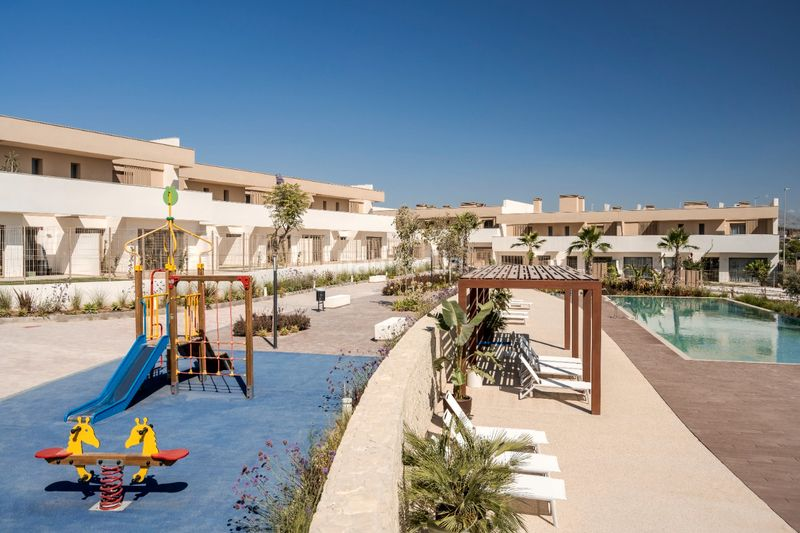
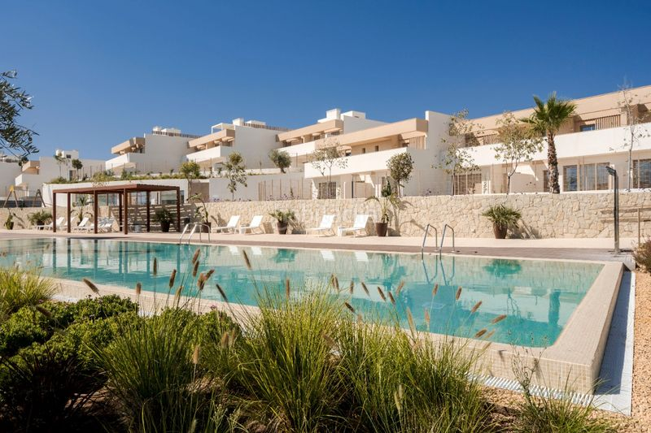
·Gestión del modelo BIM desde Proyecto Básico hasta Proyecto de Ejecución.
·Gestión y sistema de control de áreas y superficies.
·Creación de Planos Comerciales.
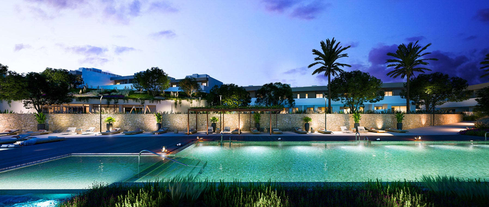
IMPLANTACIONES BIM
Junto a TRIAR he ayudado a despachos de arquitectura e ingeniería a implantar BIM en sus metodologías de trabajo.
VIVIENDAS UNIFAMILIARES
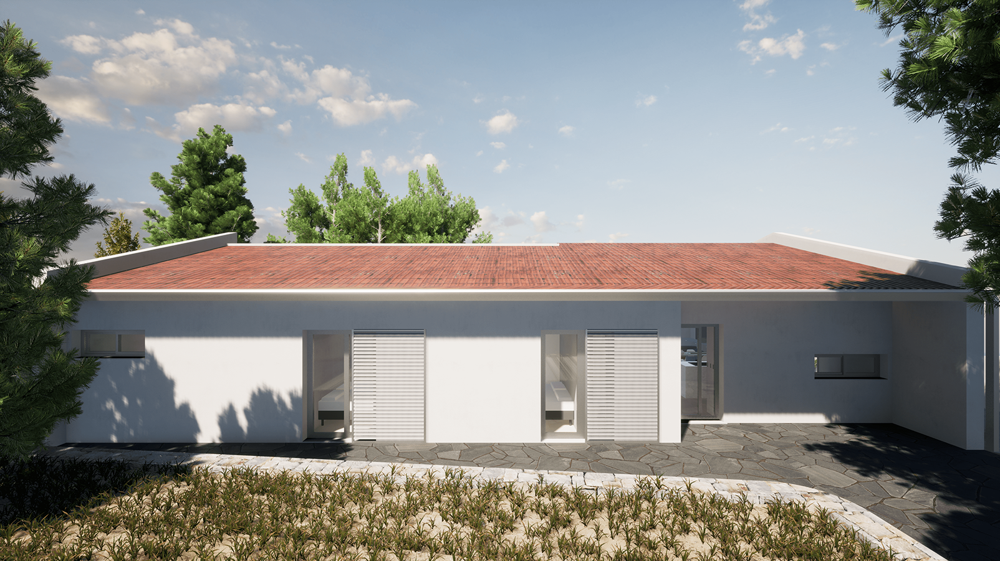
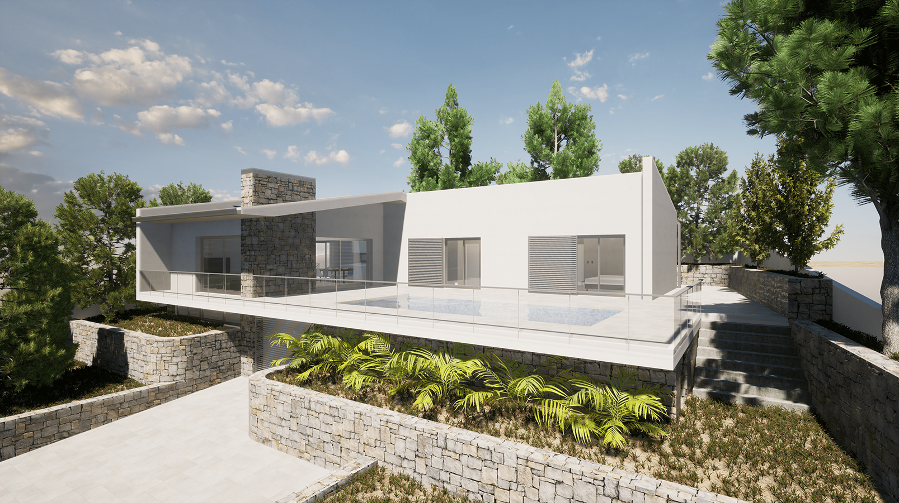
He llevado varias viviendas unifamiliares en todas sus fases del proyecto. Utilizando subproyectos,
grupos, opciones de diseño, vínculos, etc.
CONCURSOS
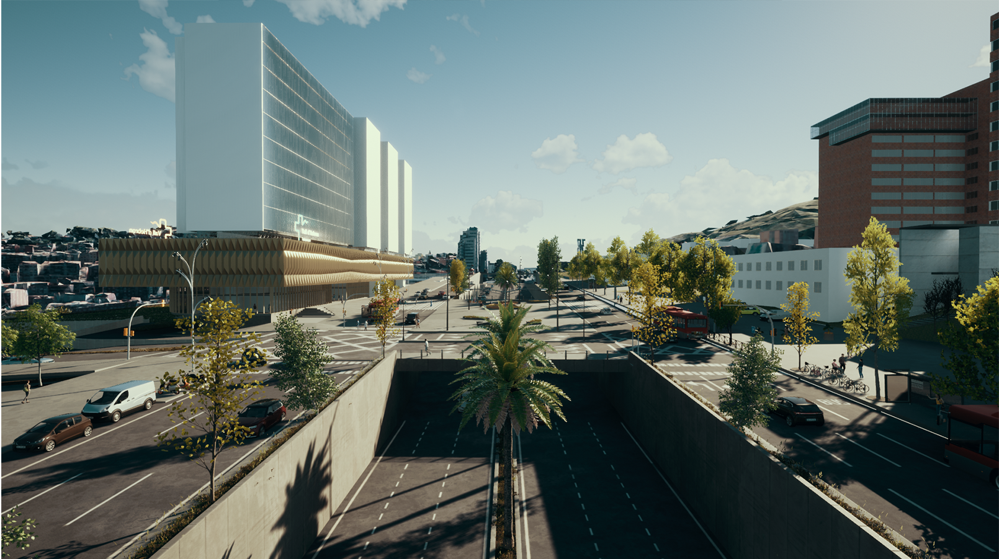
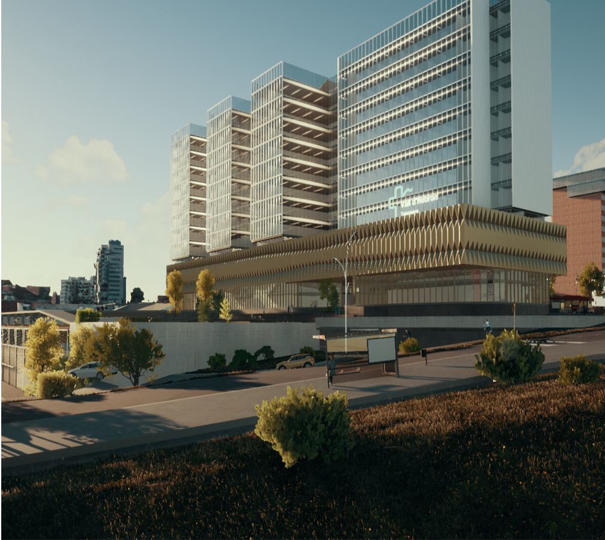
Gestión de concursos en todos los aspectos del BIM de grandes proyectos,
como por ejemplo el concurso para el nuevo edificio del hospital Vall d'Hebrón y edificios de viviendas
en Torrent y Madrid.
Modelado de familias y estructras complejas tanto metálicas, de madera o de hormigón.
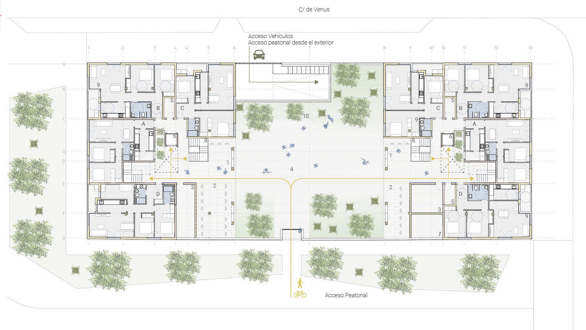
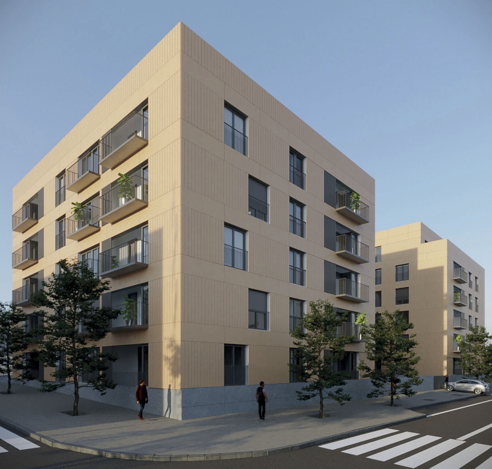
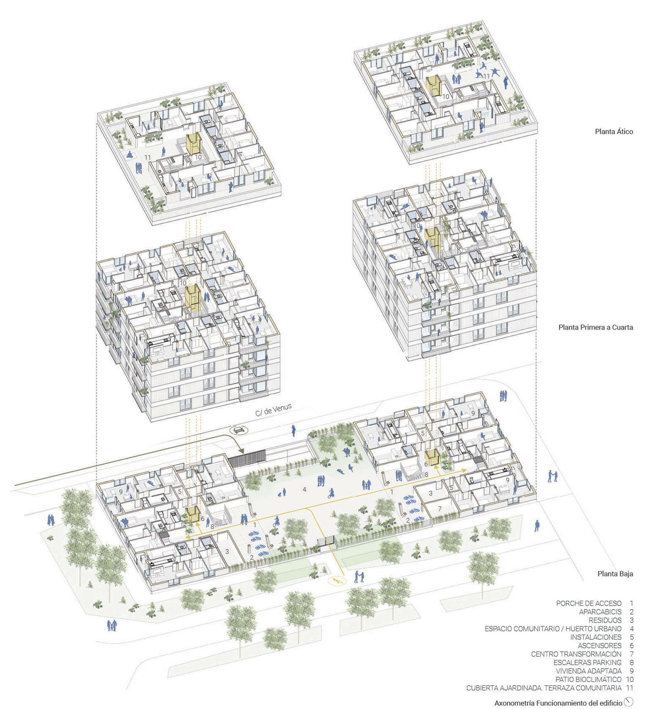
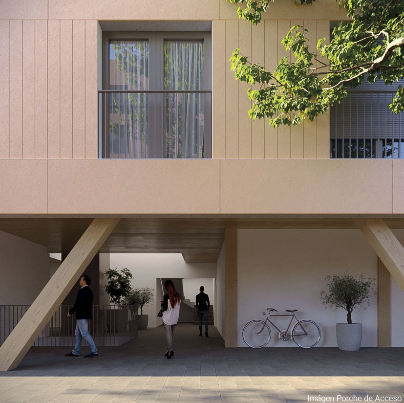
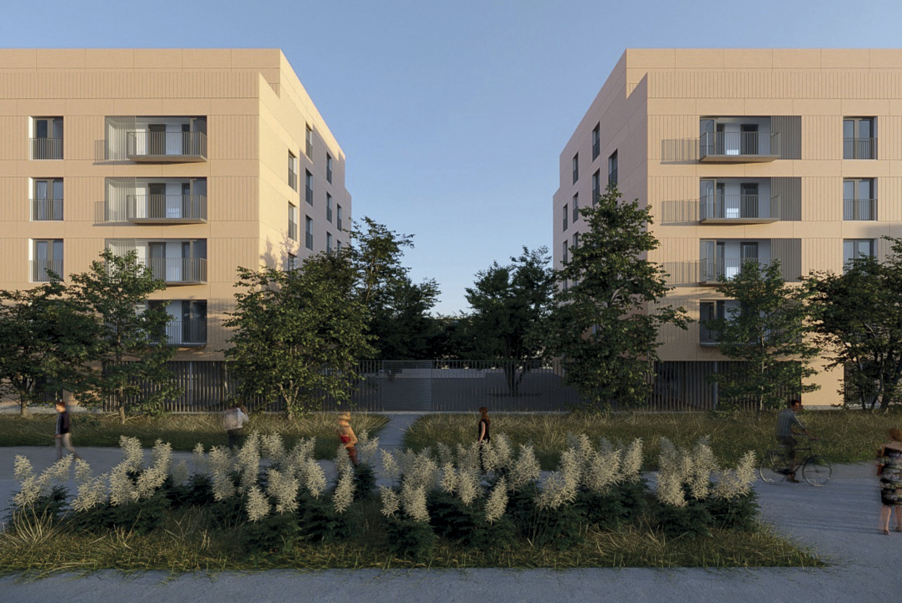

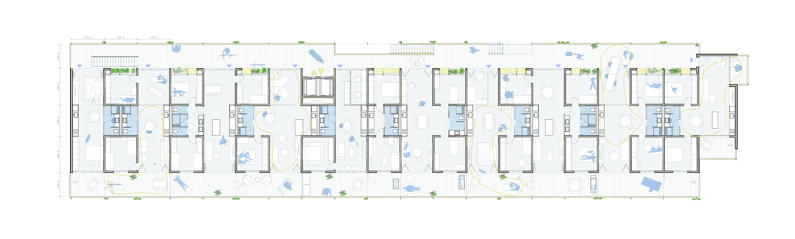
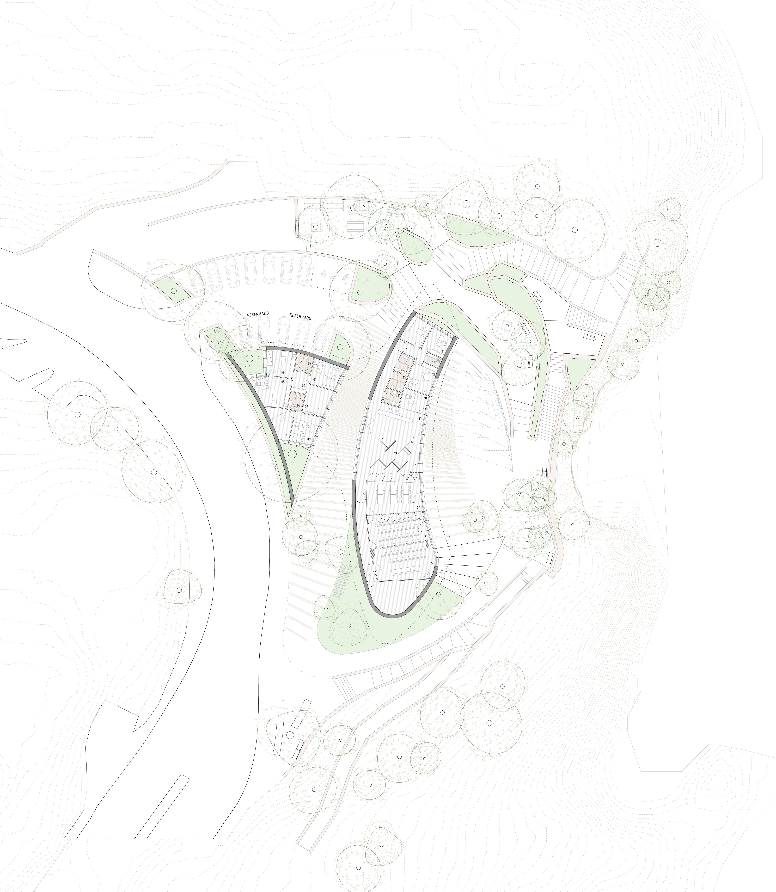